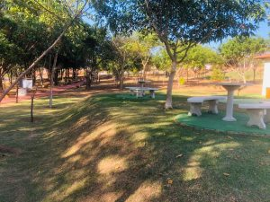
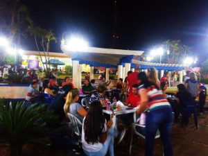

O que eu mais gosto em Monte Azul
Parque ecológico
Espaço Publico criado para atender demandas de laser, convivência e esporte da população. Conta com quadras de areia, academia ao ar livre, lago ornamental com peixes, quiosques, parque infantil, vestiários, pista de caminhada com bebedouros e bancos no percurso e Ciclovia… E ainda, Wifi gratuito para mesmo no laser manter-se conectado com o mundo. Tudo em meio a muito verde, natureza abundante e paisagismo planejado. Em ambiente seguro e monitorado por câmeras e segurança.
Bosque Municipal
Bosque Municipal O Bosque Municipal foi criado para receber todas famílias, crianças, idosos, aberto a semana toda, em um ambiente muito aprazível e seguro. Um espaço de lazer cercado, com toda infraestrutura para desfrutar de um contato amplo e confortável com a natureza. Entre arvores de espécie raras e frutíferas, e plantas nativas e ornamentais, é gramado em toda sua extensão; possui parque para as crianças; a praça dos idosos; possui quiosques com bancos, pias com água encanada, e churrasqueiras; com banheiros feminino e masculino e estacionamento.

Feirinha na praça da delegacía
Dando prosseguimento as iniciativas de criar espaços de lazer para população, Monte Azul Paulista seguindo uma tendência mundial, montou através dos comerciantes locais, os chamados “Food Trucks”, que servem à população, esse tipo de alimentação que une boa comida de atendimento rápido com “ar livre”, informalidade e convivência. Hoje na Praça Siqueira Campos, mais conhecida como Praça da Delegacia, estão instalados diversos “trailers” que oferecem um grande número de opções de alimentação, desde do tradicional espetinho de churrasco até comida japonesa, passando por bebidas diversas (Chopp, Café, Chás, etc.), sucos de frutas naturais, açaí e ainda uma outra infinidade de petiscos e guloseimas que atraem não somente a população local como das cidades vizinhas.
